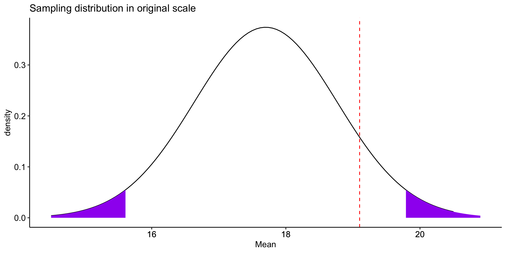
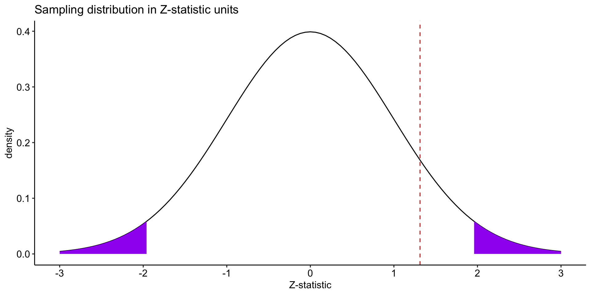
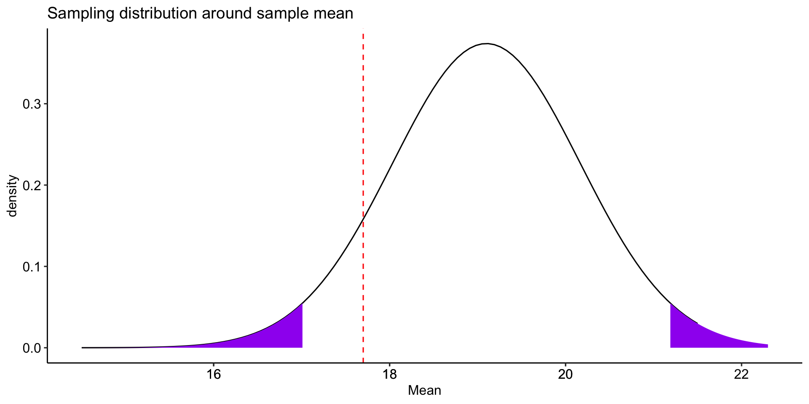
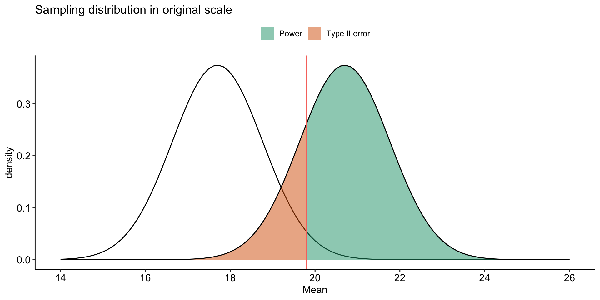
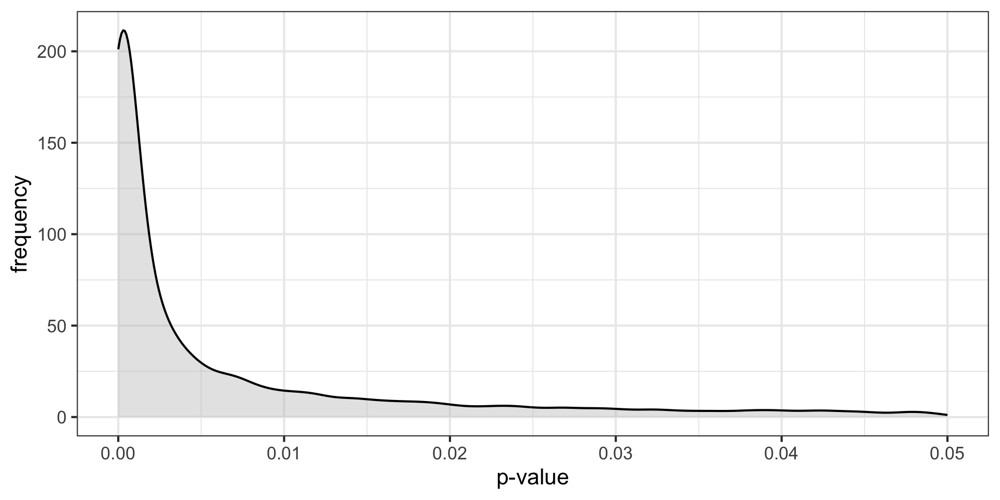

I just discovered this nice blog post about power & confidence intervals.
Recap
Does switching environments improve memory? On a standard memory task, participants remember 17.7 words (out of 30) \((\sigma = 3.2)\) after studying word lists for 9 minutes. You recruit a sample of 8 participants and make them study word lists in the student center. Every 3 minutes, they are required to stand up and move to a different room in the student center. After studying, participants are tested. On average, they remember 19.1 words \((s = 2.9)\).
Code
mu =17.7; sigma =3.2; n =9; xbar =19.1sem = sigma/sqrt(n)cv_pos = mu +1.96*semcv_neg = mu -1.96*semzstat = (xbar-mu)/semlower_bound = mu-3*semupper_bound = mu+3*semdata.frame(M =c(lower_bound:upper_bound)) %>%ggplot(aes(x = M)) +stat_function(fun =function(x) dnorm(x, mean = mu, sd = sem), geom ="line") +stat_function(fun =function(x) dnorm(x, mean = mu, sd = sem), geom ="area", fill ="purple", xlim =c(cv_pos, upper_bound)) +stat_function(fun =function(x) dnorm(x, mean = mu, sd = sem), geom ="area", fill ="purple", xlim =c(lower_bound, cv_neg)) +geom_vline(aes(xintercept = xbar), color ="red", linetype ="dashed") +scale_x_continuous(breaks =round(c(lower_bound:upper_bound))) +labs(x ="Mean", y ="density", title ="Sampling distribution in original scale")+theme_pubr()

Code
data.frame(M =c(-3:3)) %>%ggplot(aes(x = M)) +stat_function(fun =function(x) dnorm(x), geom ="line") +stat_function(fun =function(x) dnorm(x), geom ="area", fill ="purple", xlim =c(1.96, 3)) +stat_function(fun =function(x) dnorm(x), geom ="area", fill ="purple", xlim =c(-3, -1.96)) +geom_vline(aes(xintercept = zstat), color ="red", linetype ="dashed") +scale_x_continuous(breaks =c(-3:3)) +labs(x ="Z-statistic", y ="density", title ="Sampling distribution in Z-statistic units")+theme_pubr()

The probability of getting this sample mean in this sampling distribution is:
pnorm(q =19.1, mean =17.7, sd =1.067, lower.tail = F)*2
[1] 0.1894898
pnorm(q =1.3125, lower.tail = F)*2
[1] 0.1893515
Recap
You can test the hypothesis by comparing the sample mean \((\bar{X})\) to the mean under the null hypothesis \((\mu_0)\).
Alternatively, you can compare the the mean under the null hypothesis \((\mu_0)\) to the the sample mean \((\bar{X})\).
Code
mu =17.7; sigma =3.2; n =9; xbar =19.1sem = sigma/sqrt(n)cv_pos = xbar +1.96*semcv_neg = xbar -1.96*semzstat = (xbar-mu)/semlower_bound = mu-3*semupper_bound = xbar+3*semdata.frame(M =c(lower_bound:upper_bound)) %>%ggplot(aes(x = M)) +stat_function(fun =function(x) dnorm(x, mean = xbar, sd = sem), geom ="line") +stat_function(fun =function(x) dnorm(x, mean = xbar, sd = sem), geom ="area", fill ="purple", xlim =c(cv_pos, upper_bound)) +stat_function(fun =function(x) dnorm(x, mean = xbar, sd = sem), geom ="area", fill ="purple", xlim =c(lower_bound, cv_neg)) +geom_vline(aes(xintercept = mu), color ="red", linetype ="dashed") +scale_x_continuous(breaks =round(c(lower_bound:upper_bound))) +labs(x ="Mean", y ="density", title ="Sampling distribution around sample mean")+theme_pubr()

Recap: Errors
What kind of error could we have just made?
How do I assess the probability of errors?
Type I error (false positive) is equal to \(\alpha\). You, the researcher, choose the Type I error rate you are comfortable with.
Type II error (false negative) depends on making a guess about the effect size. This determines the mean of an alternative distribution
Code
mu =17.7; sigma =3.2; n =9; xbar =19.1sem = sigma/sqrt(n)cv_pos = mu +1.96*semcv_neg = mu -1.96*semzstat = (xbar-mu)/semlower_bound = mu-3*semupper_bound = mu+3*semdata.frame(M =c(lower_bound:(upper_bound+5))) %>%ggplot(aes(x = M)) +stat_function(fun =function(x) dnorm(x, mean = mu, sd = sem), geom ="line") +stat_function(aes(fill ="Type I error"), fun =function(x) dnorm(x, mean = mu, sd = sem), geom ="area", xlim =c(cv_pos, upper_bound),alpha = .5) +stat_function(aes(fill ="Type I error"), fun =function(x) dnorm(x, mean = mu, sd = sem), geom ="area", xlim =c(lower_bound, cv_neg),alpha = .5) +stat_function(fun =function(x) dnorm(x, mean = mu+3, sd = sem), geom ="line") +geom_vline(aes(xintercept = cv_pos, color ="Type I error")) +scale_x_continuous(breaks =seq(14,26,2), limits =c(14,26)) +guides(color ="none") +labs(x ="Mean", y ="density", title ="Sampling distribution in original scale", fill =NULL)+theme_pubr()
Code
data.frame(M =c(lower_bound:(upper_bound+5))) %>%ggplot(aes(x = M)) +stat_function(fun =function(x) dnorm(x, mean = mu, sd = sem), geom ="line") +stat_function(aes(fill ="Type II error"), fun =function(x) dnorm(x, mean = mu+3, sd = sem), geom ="area", xlim =c(lower_bound, cv_pos),alpha = .5) +stat_function(aes(fill ="Power"), fun =function(x) dnorm(x, mean = mu+3, sd = sem), geom ="area", xlim =c(cv_pos, upper_bound+5),alpha = .5) +stat_function(fun =function(x) dnorm(x, mean = mu+3, sd = sem), geom ="line") +geom_vline(aes(xintercept = cv_pos, color ="Type I error")) +scale_x_continuous(breaks =seq(14,26,2), limits =c(14,26)) +scale_fill_brewer(palette ="Dark2") +guides(color ="none") +labs(x ="Mean", y ="density", title ="Sampling distribution in original scale", fill =NULL)+theme_pubr()

How can power be increased?
Code
data.frame(M =c(lower_bound:(upper_bound+5))) %>%ggplot(aes(x = M)) +stat_function(fun =function(x) dnorm(x, mean = mu, sd = sem), geom ="line") +stat_function(fun =function(x) dnorm(x, mean = mu, sd = sem), geom ="line") +stat_function(aes(fill ="Type I error"), fun =function(x) dnorm(x, mean = mu, sd = sem), geom ="area", xlim =c(cv_pos, upper_bound),alpha = .5) +stat_function(aes(fill ="Type I error"), fun =function(x) dnorm(x, mean = mu, sd = sem), geom ="area", xlim =c(lower_bound, cv_neg),alpha = .5) +stat_function(aes(fill ="Type II error"), fun =function(x) dnorm(x, mean = mu+3, sd = sem), geom ="area", xlim =c(lower_bound, cv_pos),alpha = .5) +stat_function(aes(fill ="Power"), fun =function(x) dnorm(x, mean = mu+3, sd = sem), geom ="area", xlim =c(cv_pos, upper_bound+5),alpha = .5) +stat_function(fun =function(x) dnorm(x, mean = mu+3, sd = sem), geom ="line") +geom_vline(aes(xintercept = cv_pos, color ="Type I error")) +#scale_x_continuous(breaks = c(14:26), limits = c(14:26)) + scale_fill_brewer(palette ="Dark2") +guides(color ="none") +labs(x ="Mean", y ="density", title ="Sampling distribution in original scale", fill =NULL)+theme_pubr()
Often the most challenging part of a power analysis is to settle on an effect size.
Past research can often provide some guidance, especially if a meta-analysis is available.
Note that these are often over-estimates.
Sometimes a field might have standards regarding what counts as a meaningful effect (e.g., minimal clinically important difference).
Lacking this information, we can settle for more abstract benchmarks or rules of thumb about what are “small,” “medium”, and “large” effects.
But as we discussed, these benchmarks need to be contextualized in real-world outcomes.
Complicating these choices, effect sizes come in a variety of metrics.
Prevalence of false positives
Consider where \(\alpha\), \(\beta\) and power fall in this grid.
Reject \(H_0\)
Do not reject
\(H_0\) True
Type I Error
Correct decision
\(H_0\) False
Correct decision
Type II Error
Prevalence of false positives
Consider where \(\alpha\), \(\beta\) and power fall in this grid.
Reject \(H_0\)
Do not reject
\(H_0\) True
\(\alpha\)
\(1-\alpha\)
\(H_0\) False
\(1-\beta\)
\(\beta\)
What is the sum of these cells?
Prevalence of false positives
Figuring out how common Type I and Type II errors are in a literature requires an additional piece of information:
How often \(H_0\) is true.
Ioannidis (2005) demonstrates that given R (the ratio of \(H_0\) false over \(H-0\) true), we can calculate the positive predictive value of a finding, which is the likelihood that \(H_1\) is true given we found a significant result:
\[\frac{(1-\beta)R}{(1-\beta)R+\alpha}\]
Let’s make some assumptions. If psychology studies use \(\alpha = .05\) and are good at achieving adequate power ( \(1-\beta = .80\) ), how does the choice of hypothesis affect PPV?
In addition to being under-powered, there’s recognition that research practices have inflated family-wise error, making \(\alpha\) much bigger than it should be.
Many will describe the current “replication crisis” or “reproducibility crisis” or “open science movement” as tracing its beginnings to 2011, mostly due to:
But the reality is that NHST has always had its critics. And it’s not for lack of eloquence that they have been ignored…
“What’s wrong with [NHST]? Well, among many other things, it does not tell us what we want to know, and we so much want to know what we want to know that, out of desperation, we nevertheless believe that it does!” – Cohen (1994)
What kind of mess have we gotten ourselves into?
\(p < .05\) as a condition for publication
Publication as a condition for tenure
Novelty as a condition for publication in top-tier journals
Institutionalization of NHST
High public interest in psychological research
Unavoidable role of human motives: fame, recognition, ego
What kind of science have we produced?
\(p < .05\) as a primary goal
Publication bias: “Successes” are published, “failures” end up in file drawers
Overestimation of effect size in published work
Underestimation of complexity (why did the failures occur?)
Underestimation of power
Inability to replicate
Settling for vague alternative hypotheses: “We expect a difference”
What kind of science have we produced?
Dichotomous thinking (based on \(p\) ): research either “succeeds” or “fails” to find the expected difference
No motivation to pursue failures to reject the null
Harvesting (mostly) the low-hanging fruit in science to publish quickly and often.
Weak theory
Low precision (“differences” are enough)
No non-nil null hypotheses
Weak, slow progress as a science
Focusing on \(p\) -values
Let’s start with some intuition.
Imagine you conduct two studies. Assuming your alpha is .05 and the null is true, what is the probability that the first study or the second study or both studies yield significant results?
Less than 5%?
Exactly 5%?
More than 5%?
Focusing on \(p\) -values
Imagine rolling a die.
What’s the probability you roll a 2?
\(P(6) = 1/20 = 16.7\%\)
If you roll the die twice, what’s the probability that you get a 2 at least once? \(30.6\%\)
If you roll the die 5 times, what’s the probability that you get a 2 at least once? \(59.8\%\)
Roll the die enough times, and you’ll get a 2 eventually. Significance testing when the null is true is like rolling a 20-sided die.
Instead, each study, even those with a single statistical test, might represent many rolls of the die.
Researcher degrees of freedom: Decisions that a researcher makes that change the statistical test.
Examples:
Additional dependent variables
Tests with and without covariates
Data peeking
Each time I see how a decision affected my result, I am rolling the dice again.
p-hacking
p-hacking: collecting or selecting data or statistical analyses until non-significant results become significant.
Prior to 2011, this was common practice. In fact, it was often taught as best practices.
“Explore your data.”
“Understand your data.”
“Test sensitivity…”
We should recognize now that this inflates Type I error.
p-curve (2013)
One of the most useful discoveries of the early reform movement was the expected behavior of p-values under different conditions. We refer broadly to these analyses as the p-curve, because they describe the distribution of expected p-values in different scenarios.
data.frame(sim =1:sims, p=p_values) %>%ggplot(aes(x = p)) +geom_density(alpha = .4, fill ="grey")+scale_x_continuous(limits =c(0, .05)) +theme_bw(base_size =16) +labs(x ="p-value", y ="frequency")

These distributions describe what we expect p-values to look like in the long run when a given hypothesis is true or false.
But note: what’s an important assumption in these simulations?
What if experimental studies were not independent of one another?
Imagine a research has a good idea. They run an experiment. One of two things happen:
They get a significant result.
They do not get a significant result.
Do they repeat the study? Say the motivated researcher tries again, only if they don’t find a significant result, but doesn’t try again if the results come out the way they expect. What happens?
p-curve made it clear that if our null hypotheses were indeed false, we would most often see very small p-values.
Importantly, this also signalled that literatures (or papers) that contained lots of p-values between .01 and .05 were relatively unlikely, unless there were some fishing expeditions going on.
The publication of “False Positive Psychology” and the p-curve paper, following the claim by Ioannidis (2005) that as many as half of published findings are false prompted researchers to take a second look at the “knowns” in our literatures.
If we can demonstrate these “known” effects, then we’re ok. Our effects are most likely true.
And if that had happened, we probably wouldn’t have two lectures in this class dedicated to problems with NHST and how to address them.
The inability to replicate published research has been viewed as especially troubling.
Ultimately, much of the problems, both pre-2011 and since, have stemmed from an over-reliance on p-values (Anderson, 2019).
This is a point that bears repeating, early and often:
Science cannot use a single metric to evaluate the existence or importance of effects and theories.
Detectives don’t make a case on a single clue.
Doctors don’t diagnosis illness using a single symptom.
You shouldn’t rely on a single number either.
Plus, we need to stop relying on single studies.
What kind of challenges will need to be addressed?
Institutionalization of CI and ES but not \(p\)
Journals must change their values
How do we shift media values? Replication is not “sexy.”
How do we shift academic values? What will be the impact on tenure? How do we re-calibrate “productivity?” Citation indices?
The inability to replicate much work has been viewed as a singular failure of psychology as a science.
But is that the best way to view it?
As data, the replication crisis, it is potentially quite informative and suggests some importance features of psychology as a science.
At a minimum, it tells us we don’t understand a phenomenon as well as we think we do. That is hardly a failure of science, unless we don’t take the next steps to resolve our ignorance.
Failures to replicate are surprising, even troubling. We think of them as unfortunate occurrences. Bad luck even. But should they be viewed that way?
Surprises in science have a long history of playing a key role in scientific progress.
A failure to replicate should be viewed as particularly interesting.
It is time to insist that science does not progress by carefully designed steps called “experiments” each of which has a well-defined beginning and end. Science is a continuous and often disorderly and accidental process. A first principle not formally recognized by scientific methodologists: when you run onto something interesting, drop everything else and study it. –B. F. Skinner (1968) A case history in scientific method